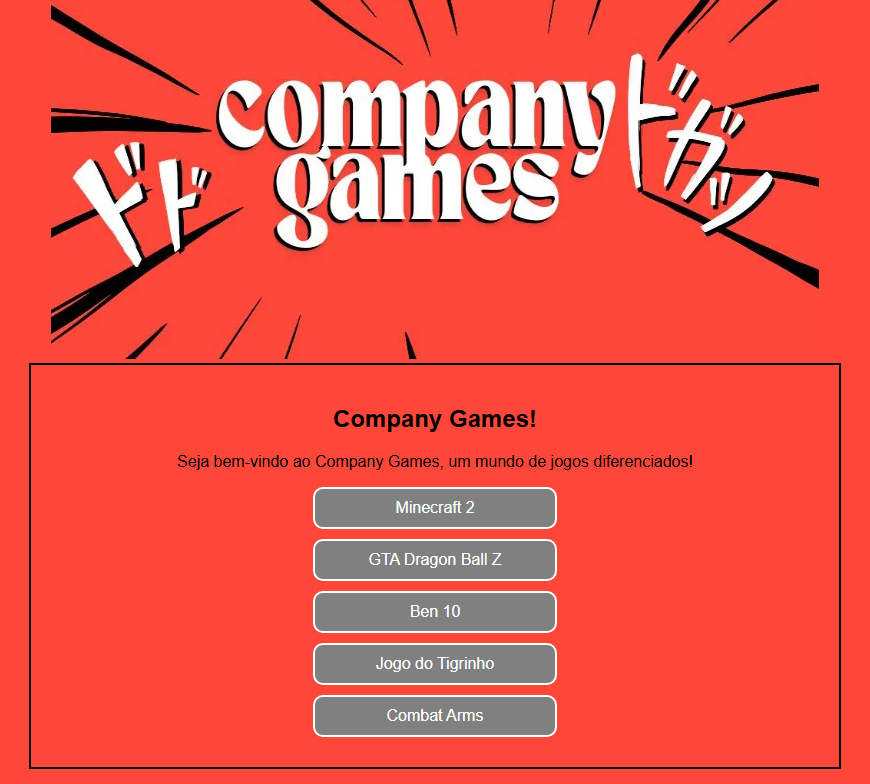

Sobre mim
Prazer, me chamo Bento Martins, tenho 23 anos e atualmente sou estudante de Ciência da Computação na Atitus Educação, apaixonado por tecnologia e em constante busca por novas oportunidades de aprendizado e desenvolvimento profissional.
Sou uma pessoa com grande vontade de aprender e aprimorar meus conhecimentos. Tenho particular interesse por desenvolvimento web e me dedico ao estudo de linguagens como Java, CSS, HTML e JavaScript.
Experiências Profissionais
- DAER - Passo Fundo – Auxiliar de Laboratório (2023 - 2025)
• Organização e arquivamento de documentos, garantindo a facilidade de acesso.
• Organização de documentos físicos e eletrônicos, mantendo registros atualizados.
• Acompanhamento de processos internos e externos, garantindo o cumprimento de prazos.
• Atualização de bases de dados e sistemas com informações recentes.
• Conferência e verificação de dados em relatórios e planilhas.
Formação Acadêmica
- Escola Notre Dame Menino Jesus – Ensino Fundamental (2009 - 2017)
- Escola Notre Dame – Ensino Médio (2018 - 2020)
- Atitus Educação • Arquitetura e Urbanismo – Ensino Superior (2021 - 2022)
- Atitus Educação • Ciência da Computação – Ensino Superior (2024 - 2027)
Certificados

Habilidades

Java

JavaScript

Photoshop

HTML

CSS

Python
Projetos
Site de jogos
Este é um site de jogos básico, sem opções de jogo ativas, desenvolvido como parte das atividades da aula de Front-End. Seu principal objetivo é servir como ferramenta de apoio ao processo de aprendizado, permitindo aos alunos praticarem a estruturação de páginas web, organização de conteúdo visual e aplicação de conceitos fundamentais de HTML e CSS.
